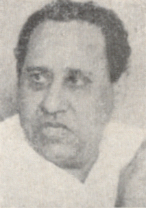
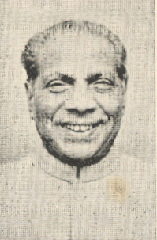

केदार नाथ सिंह

नांनाय दांसम:
मनथ्रि बिफान संसद हाबा|, आनजाइ मन्थ्रि
१९७१ - १९७४
मनथ्रि बिफान आबाद, आनजाइ मन्थ्रि
१९७४ - १९७७
मनथ्रि बिफान दे जगाय, आनजाइ मन्थ्रि
१९७७ - १९७७
नैथिा इंदिरा गांधी मन्थ्रि आफाद
मनथ्रि बिफान संसद हाबा|
आनजाइ मन्थ्रि
मनथ्रि बिफान आबाद
आनजाइ मन्थ्रि
मनथ्रि बिफान हारिमु
आनजाइ मन्थ्रि
मनथ्रि बिफान दे जगाय
आनजाइ मन्थ्रि
नैथिा इंदिरा गांधी मन्थ्रि आफाद

1_Upload_2802.pdf
1_Upload_2748.pdf

इंदिरा गांधी
o-Indira_Gandhi.htmlगहाई मन्थ्रि
१८ मार्च १९७१ - २४ मार्च १९७७

कोठा रघुरमैया
o-Kotha_Raghuramaiah.htmlमन्थ्रि मड़लानि सोद्रोमा
८ फेब्रूवारी १९७३ - ११ अक्ट’बर १९७४
केदार नाथ सिंह
o-Kedar_Nath_Singh.htmlआनजाइ मन्थ्रि
३ मे १९७१ - ११ अक्ट’बर १९७४
आरजानाय बिथोन
1_Upload_2802.pdf[26]३ मे १९७१बिबान1_Upload_2784.pdf[49]१ फेब १९७२मन्थ्रि आफाद1_Upload_2785.pdf[46]२५ जुल १९७२मन्थ्रि आफाद1_Upload_2772.pdf[56]८ फेब १९७३मन्थ्रि आफाद1_Upload_2773.pdf[53]१३ नवे १९७३मन्थ्रि आफाद1_Upload_2740.pdf[56]११ जान १९७४मन्थ्रि आफाद1_Upload_2748.pdf[37]११ अक्ट’ १९७४बिबान